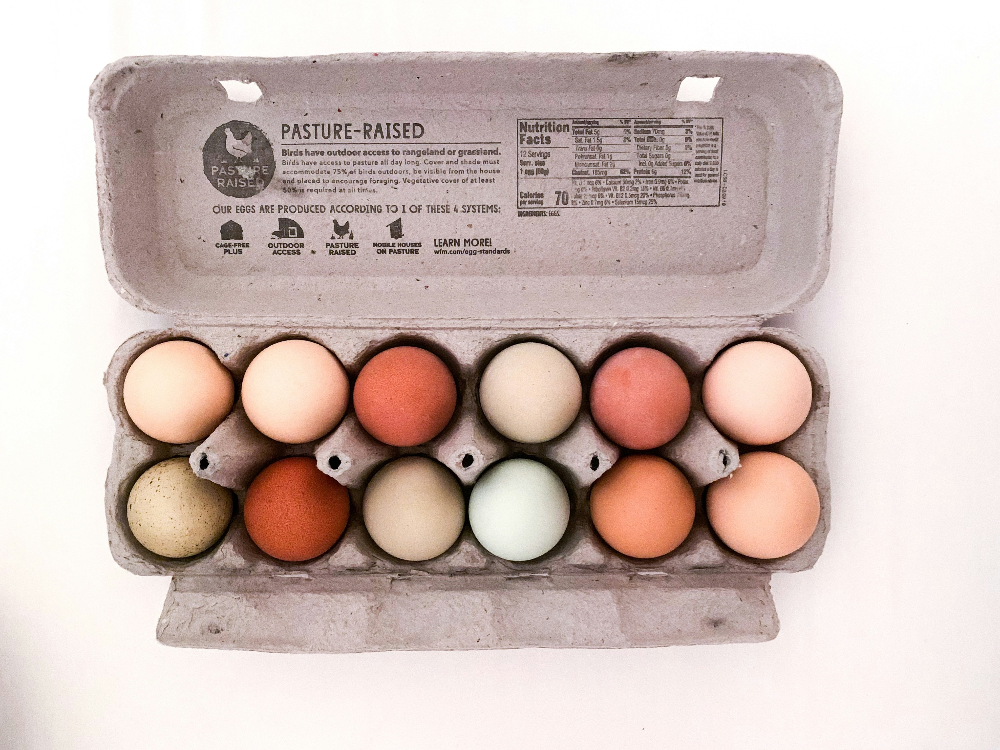

As a young data journalist, I am trained in HTML and CSS and able to design and create
graphics using Flourish. Below is an unpublished depiction of my data journalism skills at work.

Source: Unsplash
A stranger to store shelves, eggs cause widespread sticker shock among shoppers around the country.
While grocery prices drove people toward the polls just months ago, they now drive widespread commotion and frustration.
A hot topic on the campaign trail, the prospect of lower prices, particularly of groceries and gas, was a factor in 96%
of voters’ decisions, according to
AP VoteCast .
However, more factors than political administration impact the price of goods.
Although Trump tempted voters with the hope of lower grocery prices, since taking office, shoppers haven’t felt relief. Data
from the
U.S. Census Bureau’s Consumer Price Index shows
that gas prices have decreased significantly over the last ten months, however, food prices have risen steadily, with a
particular spike in meat, poultry, fish and eggs.
Having trouble viewing this interactive? Click
here
Back in August, Trump campaigned on the pledge that he would bring grocery prices down saying, “a vote for Trump means your
groceries will be cheaper.” However, soon after his election, Trump expressed less confidence in his ability to lower prices
in Time Magazine’s “Person of the Year” interview.
“Look, they got them up. I'd like to bring them down,” Trump said. “It's hard to bring things down once they're up.
You know, it's very hard. But I think that they will.” As Trump continued to promise to reduce grocery prices, a
violent force laid in his way: avian flu.
Having trouble viewing this interactive? Click
here
Egg prices had already been a source of gripe among voters, but recent outbreaks of avian flu, or bird flu, have
impacted flocks across the country and resulted in egg shortages and increased egg prices.
The average price of a dozen large, grade A eggs cost an average of $2.522 in January 2024, according data from the
U.S. Bureau of Labor Statistics. This average price has
nearly doubled with eggs pricing in at an average of $4.953 this January.
Although egg angst is widespread, some states have recorded more infected flocks than others. All of the five states
with the largest number of infected chickens turned red in the 2024 election.
Having trouble viewing this interactive? Click
here
Considering Trump’s adamancy that he would lower prices, these statistics beg the question: how much control does a
politician have over grocery prices?
On February 26, Trump’s administration announced that they intend to invest $1 billion to manage the temper skyrocketing
egg prices. This five-part plan allocates funds to give farmers financial aid, reduce egg production regulations and
investigate import opportunities, increase biosecurity on farms and fund vaccine research. Agriculture Secretary Brooke
Rollins recognized that there is no “silver bullet” in eliminating bird flu in her opinion piece in the
Wall Street Journal.
Rollins said that this plan will not solve the problem overnight, and expressed confidence that the egg market will be
stabilized in three to sixth months, starkly contrasting Trump’s campaign promise to “immediately bring prices down, staring
on day one.”
Should American voters at large and specifically those in highly affected states feel shortchanged now that campaign promises
have failed to come to fruition? Or were these promises unrealistic and should voters have recognized their unattainability?
Regardless of the feasibility of campaign promises, presidential candidates sway voters by the promises they make on the
campaign trail. While candidates use a myriad of tactics, it’s hard to decipher the difference between concrete plans and
campaign strategery.
Trump has not delivered on his day one campaign promise, but this promise was inevitably unattainable. Trump entered office
when bird flu was already running rampant and it was certain that managing egg prices would be on his to-do list not his
day-one checklist.
{kind=link}
{kind=link}

{kind=link}